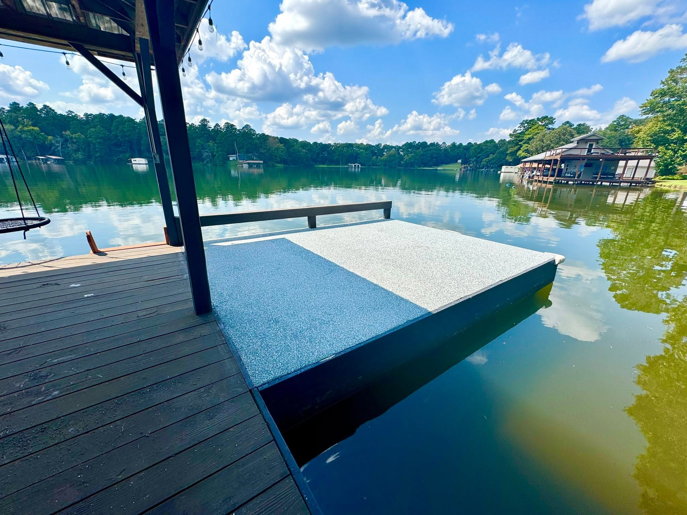
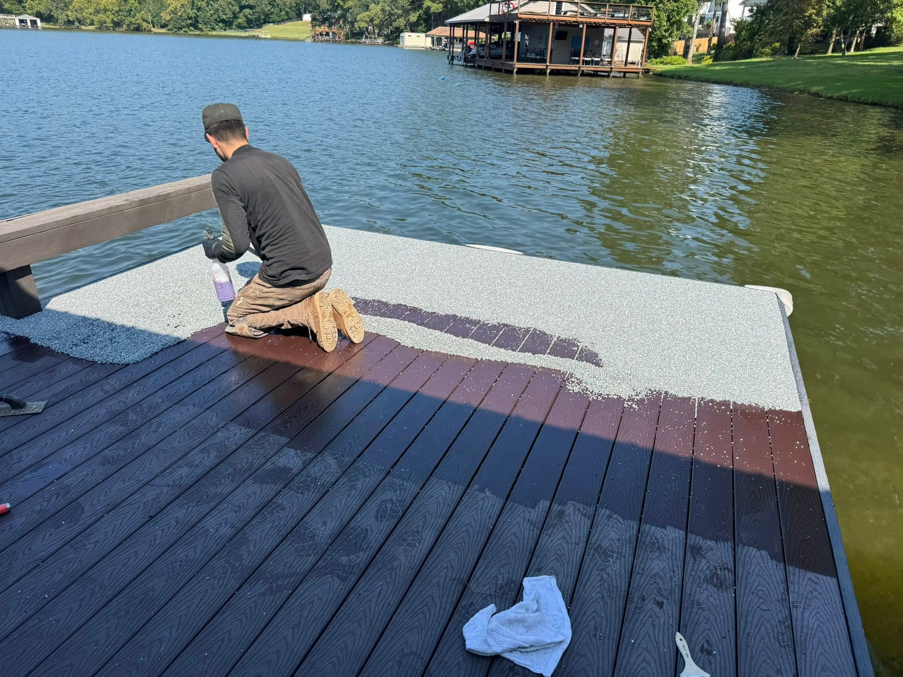
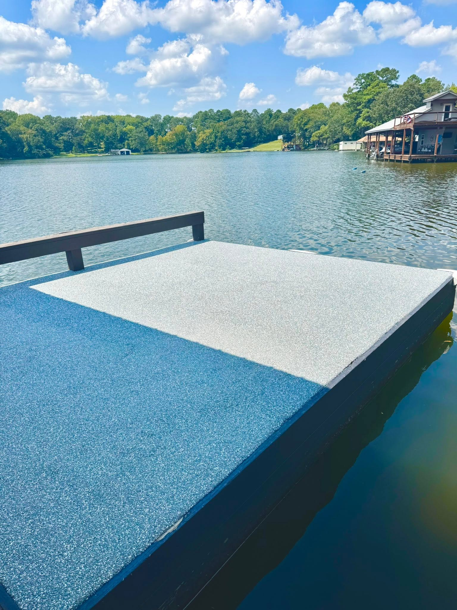
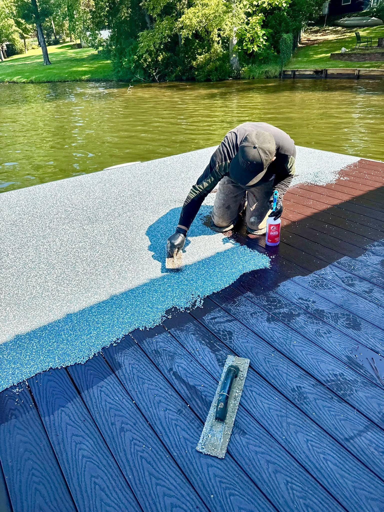
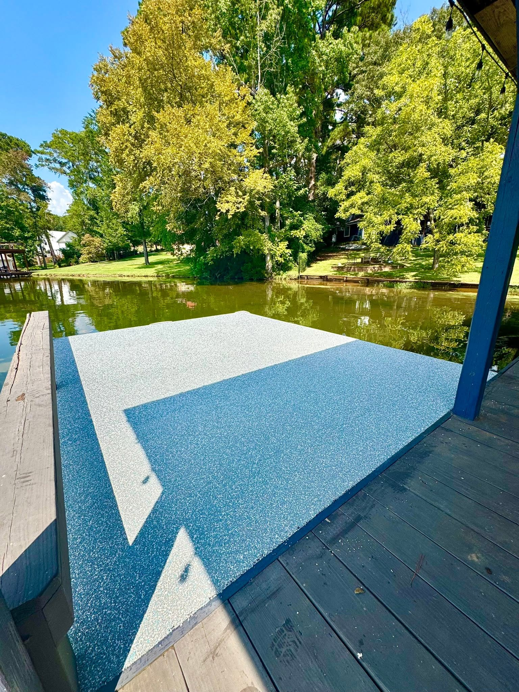
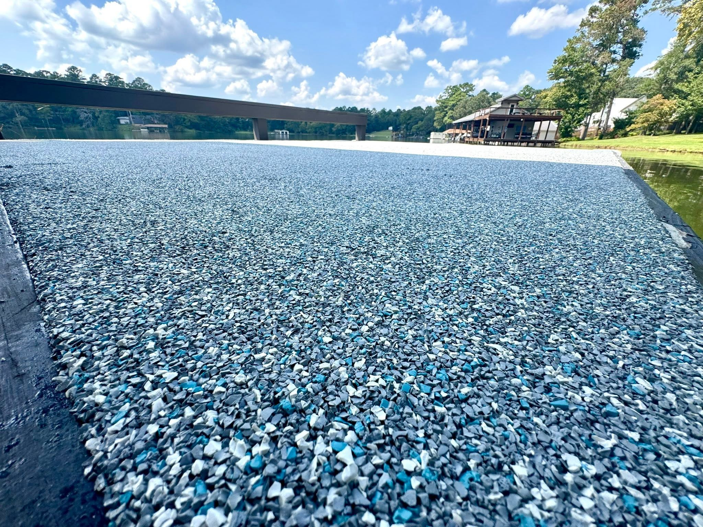

Jacksonville dock project
Lakefront dock surfacing made for wet feet, bright sun, and long weekends.
A dock platform moved from a dark, unfinished work zone to a cool blue-gray surface that looks clean from the house, the water, and every photo angle.

During and after
From dock install zone to a finished lake platform.
The available early photos are during-install shots, so this slider shows the transformation honestly: product being worked into the dock surface, then the finished blue-gray lakefront platform after it cures into a clean, photo-ready surface.


During: install in progress
After: lakefront finish
Drag the project slider



Have a dock or wet-zone surface?